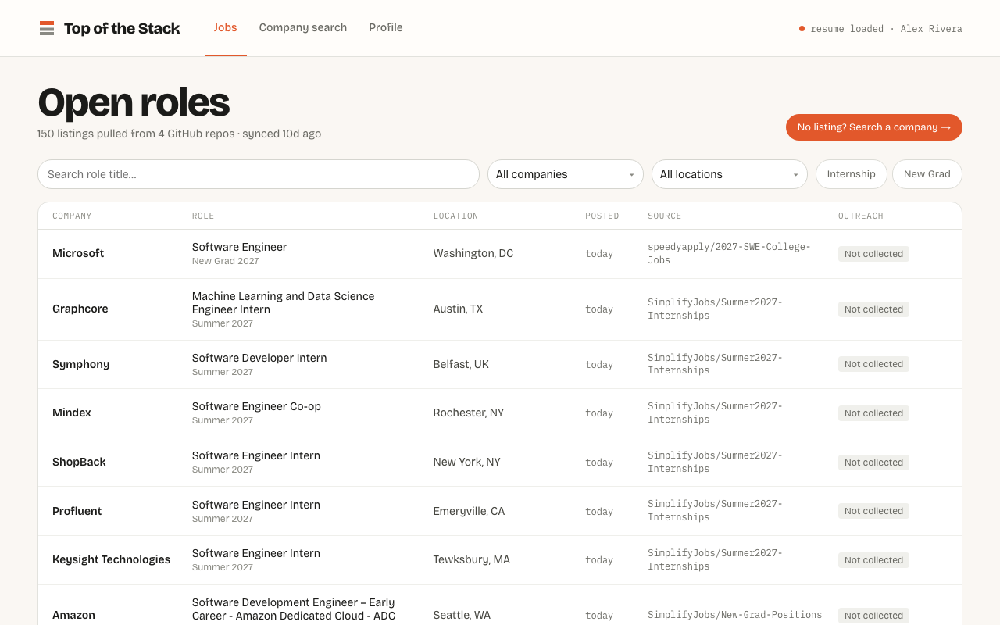

Top of the Stack
BYUHack 2nd place. Claude agents with web search find recruiter contacts and draft outreach from the user's resume. Three parallel agents race and the first validated email wins, and the agent is barred from guessing addresses. A Chrome extension saves LinkedIn connections with idempotent retries. I used it to secure 3+ referrals.